There’s nothing that says summer more that S’mores, that simple but delicious dessert comprising two graham crackers, a matching square of milk chocolate and a perfectly toasted marshmallow. August 10th was National S’mores Day – who knew! When did you first taste one? At summer camp, with marshmallows toasting over a bonfire? A likely answer. Today, that’s still possible, but sources of heat (and cold!), ingredients, and forms of presentation have dramatically evolved.
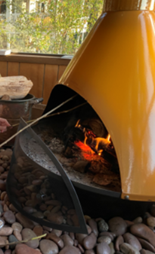 |
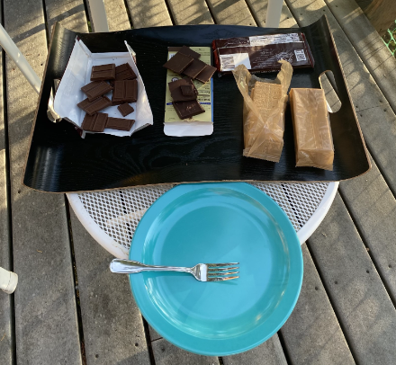 |
Trying to recreate the original experience isn’t always possible. On an island where a dry summer meant a burn ban was in place, precluding a beach fire, we found that the only option was to use an indoor fireplace. Traditional ingredients were laid out on the deck and marshmallows were cooked indoors in the fireplace. The taste was wonderful, but the process was imperfect.
Another burn ban year, we were allowed to use charcoal grills, so we again improvised using the traditional ingredients. We toasted the marshmallows on the contained fire of the Weber grill.
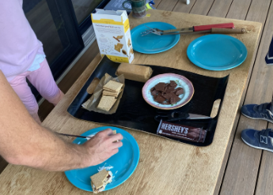 |
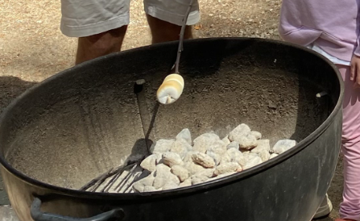 |
Finally, the third year, we were able to make a proper beach fire. These S’mores tasted particularly delicious.
These are just a few of the ways we’ve cooked S’mores over the years. You can even cook them in an oven or buy an electric S’mores maker if you don’t have any kind of fire; but somehow, I can’t imagine this improves the flavor. I think this recipe cooked on an outdoor fire must be the best tasting recipe made with the classic ingredients, but everyone does not agree! Not surprisingly, the popularity of this childhood treat has led to a plethora of new options including some very adult ones. I confess I haven’t tested all the options listed below but I didn’t want to deprive you, Dear Reader, of the joy of discovery.
Take the basic recipe and add something new. For example: Voges chocolates recommends using their collection of high-end chocolates for the added taste of caramel, walnuts, or honey.
New approaches include S’mores brownies. Some recipes just put chopped up S’mores on top of regular brownies. Not very innovative, if tasty. This recipe from Buttermilk by Sam is more elaborate and recreates the delicious layers of the traditional S’more into a brownie:
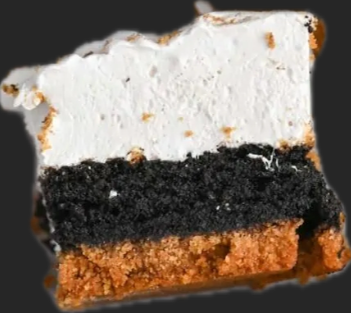
https://buttermilkbysam.com/smores-brownies/
S’mores cookies may seem closer to the original, but here’s a combination from Best Desserts that adds a special touch by combining chocolate chip cookies with the S’mores ingredients. Sounds extra delicious:
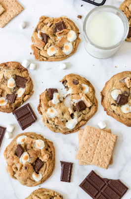
bestdesserts.com/smores-cookies
If bar cookies are more your style, you won’t by now be surprised to find S’mores Bars at Princess Pinky Girl:
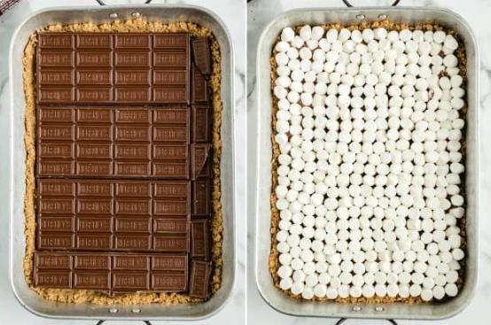
princesspinkygirl.com/smore-bars/
It’s not unusual that something so delicious as S’mores would be copied in new forms by commercial food corporations. For example, believe it or not, you can get S’mores Pop Tarts:
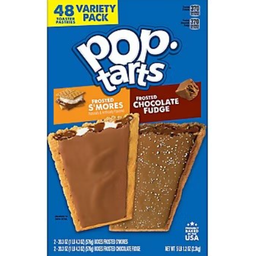
Some innovative chefs take pop tarts to a new level, using puff pastry! The Butternut Bakery blog promises these are worth the effort. Thus, a homemade dessert becomes an industrial product that inspires a new home-made version!
butternutbakeryblog.com/snickerdoodle-smores-pop-tarts/
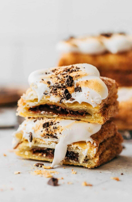
And this I found hard to believe, but I found a recipe for S’mores Pop Tart Milkshakes in the Paperenstitch blog:
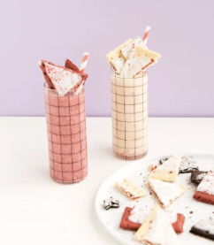
www.papernstitchblog.com/unique-milkshake-recipe/Le
Let’s move on from baked goods…there are pies and other options for the serious student to explore. It’s time to see what the drink offerings are.
The kids and some of us will also be tempted by the Starbucks secret formula hot chocolate, supposedly revealed here: https://top-secret-starbucks-recipes.fandom.com/wiki/S%27mores_Hot_Chocolate
Leave it to Starbucks rival Dunkin Donuts to come up with Bonfire S’mores Frozen Coffee – sounds like an oxymoron to me! And they also offer S’mores Cold Brew. (Plus of course a S’mores donut.)
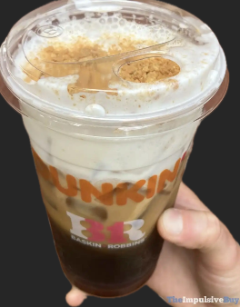
https://www.theimpulsivebuy.com/wordpress/2024/07/02/dunkin-smores-cold-brew-review/
And now the promised adult drinks! Are you interested in a martini before dinner? Here’s an option: how about a Toasted S’mores Martini with Marshmallow Vodka? I’m not kidding. The Cookie Rookie has a sweet tooth for the cocktail hour (or maybe dessert!).
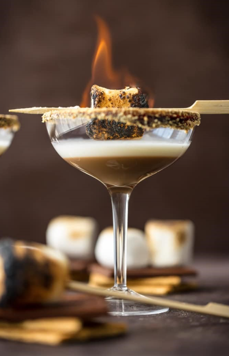
https://www.thecookierookie.com/toasted-smore-martini/
And what better way to say goodnight to this overview than to enjoy a snifter of Bailey’s… S”mores style of course, from Yankee Spirits.
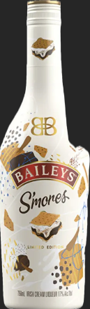
https://www.yankeespirits.com/products/14214385/baileys-s-mores-limited-edition-irish-cream
Now, there may still be some people who don’t like S’mores. I say “let them eat cake!” S’mores cake that is:
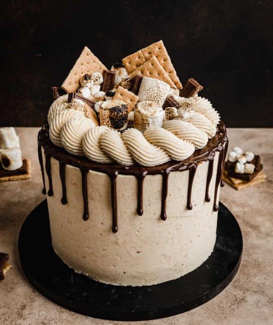
https://saltandbaker.com/smores-cake-recipe/
As you explore all these S’mores options, you might want to remember this useful information from Nutritionix.
https://www.nutritionix.com/i/nutritionix/smore-1-smore/5665a4dfeb497d4e53d175a4
Nutrition Facts
Serving Size:
One S’more (49 grams)
Amount Per Serving
Calories233
% Daily Value*
Total Fat 9.8 grams13% Daily Value
Saturated Fat 5.4 grams 27% Daily Value
Trans Fat 0 grams
Polyunsaturated Fat 1.1 grams
Monounsaturated Fat 2.4 grams
Cholesterol 6.4 milligrams2% Daily Value
Sodium 92 milligrams 4% Daily Value
Total Carbohydrates 33 grams 12% Daily Value
Dietary Fiber 1.4 grams 5% Daily Value
Sugars 22 grams
Protein 3.2 grams
Vitamin D 0 micrograms 0% Daily Value
Calcium 64 milligrams 5% Daily Value
Iron 1.2 milligrams 7% Daily Value
Potassium 128.3 milligrams 3% Daily Value
Caffeine 5.6 mg
The % Daily Value (DV) tells you how much a nutrient in a serving of food contributes to a daily diet. 2000 calories a day is used for general nutrition
Eat, drink and enjoy!